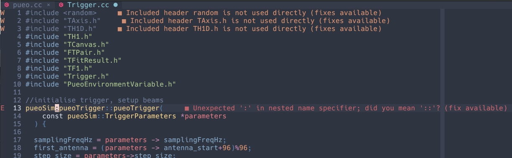
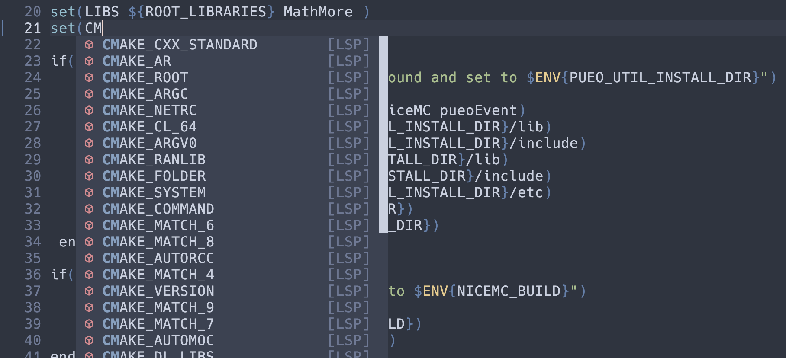
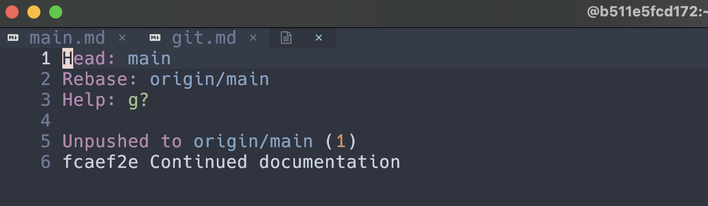
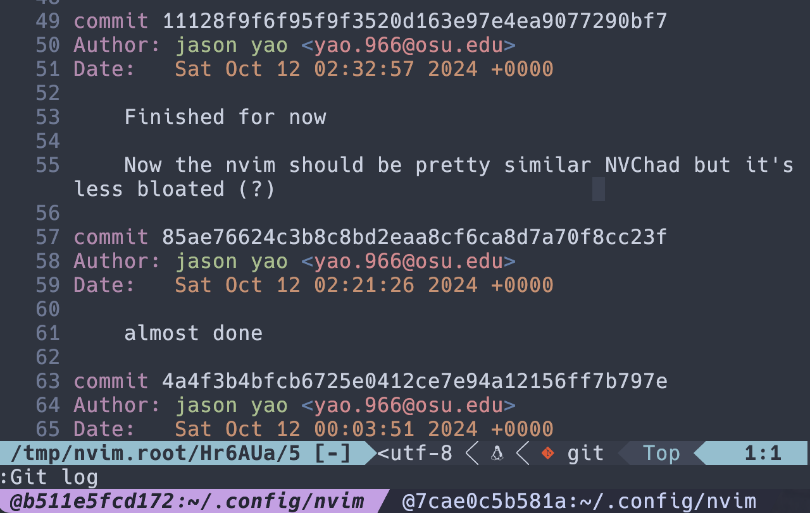

- Generated by
 1.13.2
1.13.2
|
PUEO Neovim Config
|
If you've used Vim before, I hope you will love this Neovim experience.
Since we mainly use C++, our Neovim has been configured to use clangd as its C++ LSP to help you identify errors as you edit the files.
Here's an example: 
LSP combined with the completion plugin can help you automatically complete words as well. Here's an example: 
In Normal mode, press spacebar (this is our chosen "leader key"), followed by g, and then i, the Fugitive buffer will show up:
You can stage/unstage a change with - (minus sign). (Try = yourself and see what happens!)
To commit the staged changes, press the leader key, then c, and m. Once again a buffer will pop up for you to edit the commit message. Save and quit with the usual :wq.
You can push the commit by pressing s (The commit under your cursor will be pushed) 
you can exit the Fugitive buffer with gq.
You can also view the git log through the command (still inside Neovim)

:Git log!If you're inside a Docker container and open up a text file with neovim, and you wish to copy some texts to paste elsewhere (say, Safari, or Slack), here's how you can do it.
With cursor on line 69, We could yank line 69 and one line above with
which yanks
Explanation: The "+" register has been configured to be used with osc52. In the above, we selected the register with " (shift and ') and + (shift and =), and start yanking with y as we normally do in Vim.
Alternatively, you can simply highlight the text and use the mouse (right click and select copy). For more information, see Clipboard Provider: OSC52
With Oil, one can edit the directory (add, duplicate, delete, move files) as if the file tree is simply a vim buffer!
When you make changes and save with :w, a prompt will pop up to ask you to save/discard the changes. You can exit the Oil buffer with <esc> or gq.
Jump around fast with Flash; and even faster with Treesitter!
find files, buffers, search texts with live grep, and more!